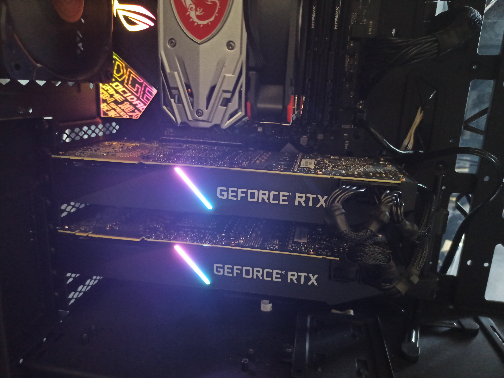
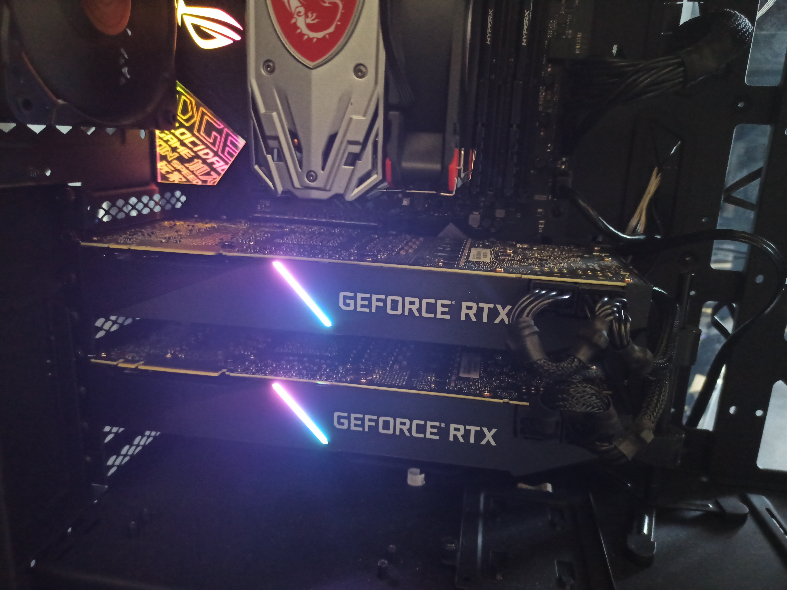
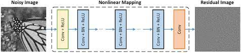

Yürütülen Projeler
- Görüntü İşleme Ters Problemlerinde Derin Öğrenme
Derin Öğrenme ve Evrişimsel Sinir Ağı(Convolutional Neural Network-CNN) yapıları, çeşitli sınıflandırma, tanıma ve bölütleme uygulamalarında çok yüksek başarım göstermektedirler. Derin öğrenme yapıları örüntü ve obje tanıma problemlerinde çok yaygın uygulama alanı bulmuştur. Öte yandan derin öğrenme ancak son birkaç yıldır görüntü işlemenin çeşitli ters problemlerine uygulanmaya başlamıştır. CNN yapıları görüntü gürültü giderme, görüntü çözünürlük yükseltme, görüntü bulanıklık giderme, görüntü iç boyama ve biyomedikal görüntü geriçatımı gibi pek çok görüntü işleme ters problemi için yeni imkanlar sunmaya başlamıştır...
